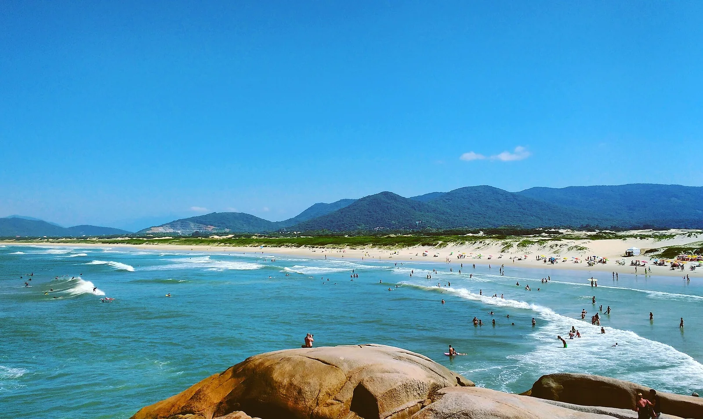

Joaquina — Florianópolis
Brésil · surf

Le spot phare de l'île de Florianópolis, beach break animé au cœur de la capitale brésilienne du surf.
- Lieu
- Brésil
- Niveau
- Intermédiaire
- Activités
- surf
- Type d'eau
- Mer / océan
- Coordonnées
- -27.63, -48.45 (position approximative du secteur)
Dangers à connaître
- Baïnes.
- Affluence l'été.
Le conseil d'Ocean Buddy
Bon spot de progression dans une ambiance festive ; attention aux courants.
Ouvrir dans Ocean Buddy Télécharger sur l'App Store
Source : Description historique Ocean Buddy · vérification externe en attente.